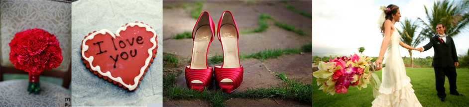

Size & Fit
When all eyes are adoring you and your bridal party , it's good to know we've taken the extra time to proportion your dresses, so a size six fits as glamorously as a sixteen. Here are a few things to keep in mind when getting fitted or altering your Watters dress.
MEASUREMENTS
We recommend your measurements be taken by a professional seamstress or your authorized Watters retailer for an accurate fit. Be sure your measurements are taken over undergarments for a more precise measurement. Please do not give bra or jean sizes. If you have a large cup size or broad back, the size of the garment must be adjusted accordingly.
Your authorized retailer can help you determine the size that is right for you. The style of the gown will often determine size as different silhouettes fit various body types. If your measurements fall between two sizes, the largest measurements must be considered first as well as the style you are ordering. Your authorized retailer will also help you determine which measurements would be easiest to alter. Remember, it's usually easier to take the garment in than to let it out when making alterations. And while it's always good to think positive, try not to overestimate the results of a diet program.
SKIRT LENGTHS
We offer different hem lengths on select styles such as knee, cocktail and floor length. We also offer extra length on select styles. Please check with your authorized retailer for individual style hem lengths and possible additional charges.
MATERNITY SIZES
Select bridesmaid styles are available for maternity . When ordering a dress, moms-to-be should discuss sizing needs with an authorized retailer.
FLOWER GIRL AND JR. BRIDESMAID SIZES
Flower Girls & Junior Bridesmaids sizes range from 2T to 14. Length measurements for flower girl and junior bridesmaid styles are based on waist to hem. We offer two different hem lengths on select styles—knee length or floor length. Please check with your authorized retailer for individual style hem lengths and possible additional charges.
Buyer Beware!
Don't go for watered down dresses on the net or from an unauthorized dealer.
The Internet is the perfect place to see what's out there and narrow down your choices but we strongly recommend the purchase of your dress be made through an authorized Sonias retail store to avoid many of the common pitfalls of bargain shopping for your big day. We have heard countless stories of cheap knock-offs sold by fly by night businesses or our dresses sold in less than perfect condition by middlemen posing as authorized dealers.
Buying from an unauthorized dealer can ruin your wedding day and cost you more than you “bargained” for. Here are some of the problems you could be faced with:
- An incorrect style or size
- Wrong or different dye lots
- Defective garments
- Garments that have been worn
- Expensive "unforeseen" shipping or alteration costs
Or even worse…you may not receive your gown in time for the wedding!
Many of these sites or in-home dealers are NOT LEGITIMATE Sonias BRISES DEALERS . Avoid this at all costs! They may lead you to believe that they are A retail store, when they really are working out of their home, a P.O. Box or the trunk of their car.
What they will tell you: They can save you money because they do not have overhead expenses by operating a store-front.
Beware: Sonias ONLY SELLS garments to full service bridal salons that can provide you the utmost in service and personal care you need. Authorized Sonias retailers are known and loved for offering honest advice and delivering on their promises. They'll help you find a dress that fits your budget and makes your day.
A “buying service” that is ordering directly from Sonias when they are really buying your gown through a third party.
What they will tell you: They can save offer big discounts because they do not have to stock sample dresses.
Beware: An authorized Sonias retailer will carry samples of the Sonias collections in their store for you to see, touch and try on so you know what looks good and feels good on your body.
Dealing directly with Sonias when in reality, you are buying from an unauthorized dealer who is selling you a counterfeit dress, or has no relationship with Sonias.
What they will tell you: They have been working with bridal gown manufacturers for years and can get you a designer gown for less than the retail price.
Beware: They can promise you all sorts of savings. But what you don't get is a promise that when something is wrong with the fabric, color, size, or when they miss your delivery date all together, you could be left with the stress and expense of a last minute catastrophe.
There are also charges and services to be aware of with internet purchases, such as shipping, pressing, and unprofessional alterations. This can often cost you more than you would have paid if you bought at full price through a full service bridal salon.
Sonias retailers are professional, knowledgeable and highly trained to sell our garments. They can provide you with the best in knowledge about the necessary size, fit and alternations necessary for your gown to fit you best without spending a fortune.
Unfortunately, not all seamstresses are experienced in bridal alternations. So when it comes down to buying and getting fitted for your dress, you'll thank yourself by dealing directly with an authorized Sonias retail store in-person.
To verify whether a particular web site or business is an authorized Sonias retailer, you can visit our Store Finder or Contact Us and provide the name of the retailer, city and state.
You get what you pay for Sonias. No worries!

Order Consent Form
It is your sole responsibility as a customer to choose your own size according to your measurements. Size charts from the chosen designer will be provided to assist you in choosing the right size. Our sales associates are there to assist and recommend the appropriate size but the final decision will be made by you. Please observe closely when the measurements are taken to ensure accuracy and also note that any measurements that are not taken in the store will not be our responsibility. Feel free to double-check our measurements by re-measuring yourself while you are in the store. Please note *dresses are not custom-made to the customer’s measurements but rather to the size chart and therefore alterations are always necessary. (Alterations Not Included
INSTRUCTIONS TO DETERMINE THE RIGHT DRESS SIZE:
BUST:__________ WAIST: __________________ HIPS:___________
Style: __________ Size Requested: __________ Color:___________
Extra length Y / N (Over 5’8” Tall will require extra length)
I understand that I’m choosing my own dress size by comparing my measurements to the designers’ size chart. (Initial here ______)
*All Sales are final – No refund or exchanges
I agree with all the terms stated above and authorize S2 to order my dress.
Signature: ________________________ Date: ___________________